
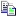

Bestanden & export
Je ontwerp bewaren en openen, en de HTML-code gebruiken.
Ontwerp bewaren en openen (.htd)
| Knop | Wat doet het? |
|---|---|
| Opslaan tabel designer | Bewaart het volledige ontwerp (tabel, opmaak, afbeeldingen, tekstblokken en pagina) als .htd-bestand. Standaard in de map htd naast het programma. |
 Openen tabel designer | Opent een eerder bewaard .htd-bestand. |
Bij het opstarten wordt automatisch het laatste werkbestand htd\temp.htd geladen.
HTML-code bekijken en exporteren
Klik onderaan op Klik hier voor extra functies om het rolluik uit te klappen. Je ziet dan twee tabbladen:
| Tabblad | Inhoud |
|---|---|
| Html-Document | De volledige HTML-pagina, klaar om als bestand te bewaren of in een website te zetten. |
| Html-Tabel | Alleen de code van de tabel, om in een bestaande pagina te plakken. |
Op beide tabbladen kun je:

Kopiëren naar klembord – de code kopiëren om ergens anders te plakken.- Bewaar HTML Document – de code als
.html-bestand opslaan.
Op het tabblad Html-Document staat bovendien Open test-browser: daarmee bekijk je het resultaat in je gewone webbrowser. Het rolluik klapt daarna weer dicht.
Afbeeldingen: de HTML verwijst naar de map
images.
Zet je de pagina op een andere plaats, neem die map dan mee.Taalbestand
De vertalingen staan in talen.lng naast het programma. Bewerk ze via
Taal... op het tabblad  Instellingen.
Instellingen.